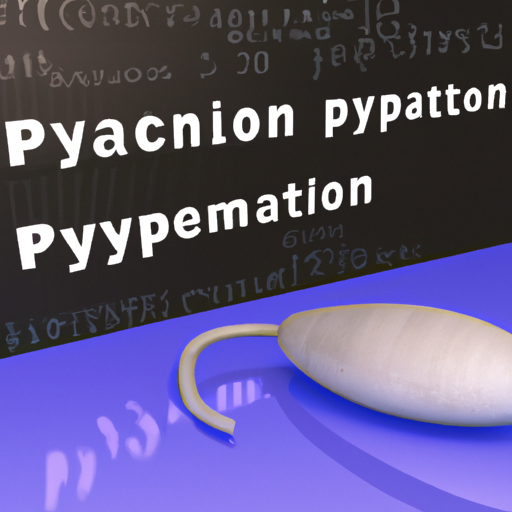

The future of Python and Cibersecurity
Python is increasingly being used in the field of cybersecurity. With its ability to quickly process data and its versatile library of packages, Python is an ideal language for developing security tools.
In addition to its use in traditional security applications such as penetration testing and vulnerability assessment, Python is also being used in more advanced applications such as machine learning and AI-based threat detection. Python's ability to quickly process large amounts of data makes it an ideal tool for building these systems.
Furthermore, Python has become a popular language for teaching cybersecurity due to its relative ease of use and its ability to quickly generate results. This has led to an increase in the number of students studying cybersecurity and pursuing careers in the field.
The future of Python in cybersecurity is bright. As more organizations move to cloud-based security systems, Python will become even more important in the field. Additionally, the increasing use of machine learning and AI-based security tools will lead to more demand for Python developers. Overall, Python is an essential tool for modern cybersecurity and is likely to remain so for the foreseeable future.